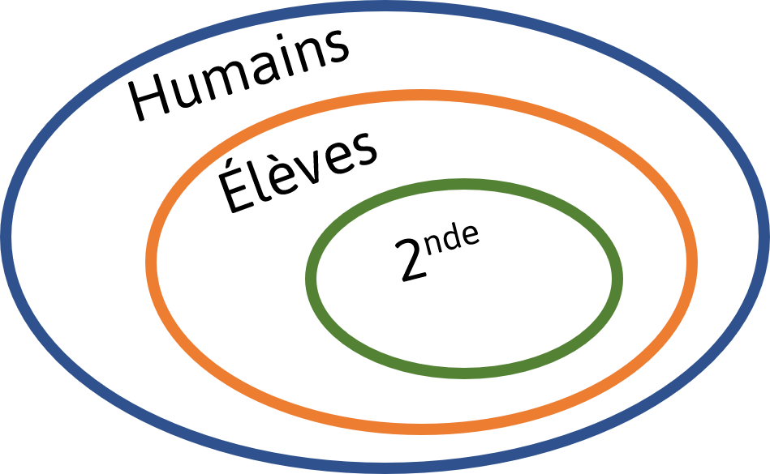
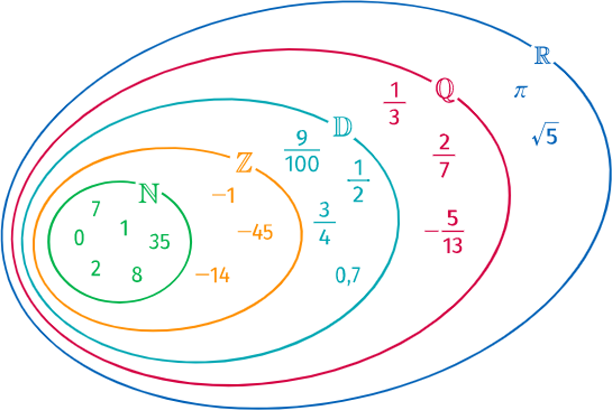
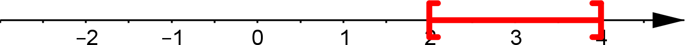
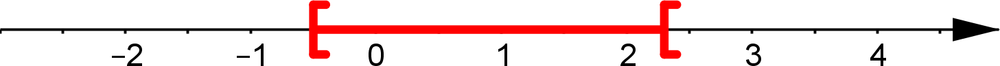
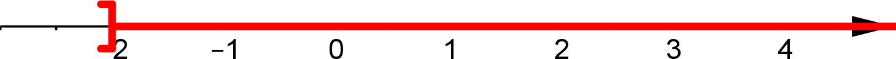
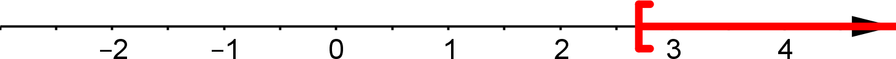
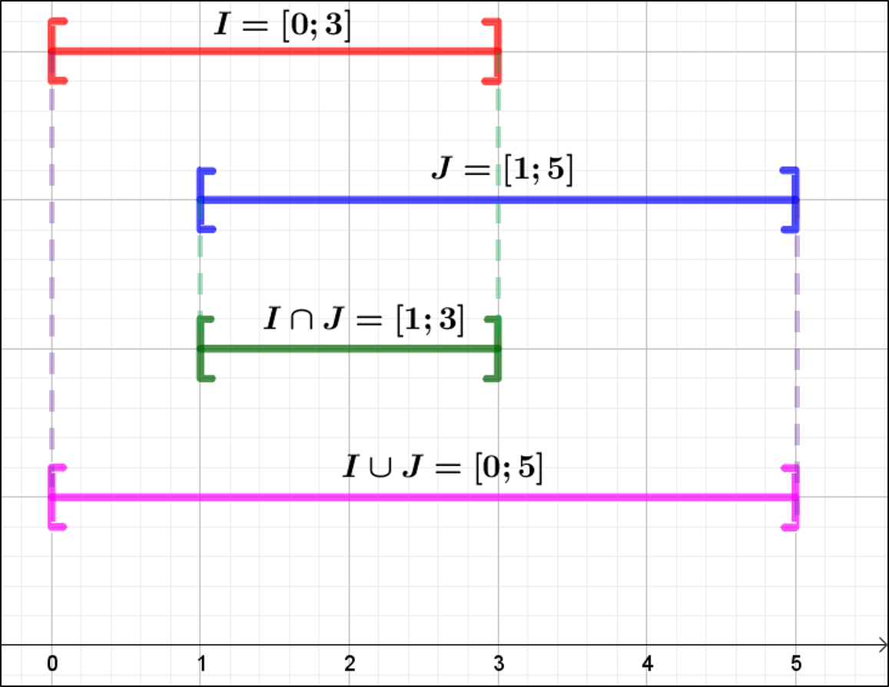
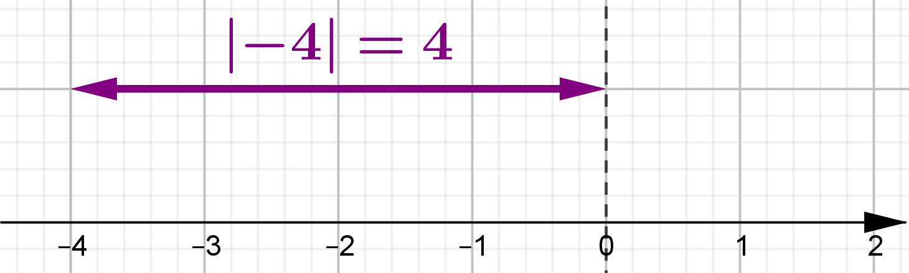
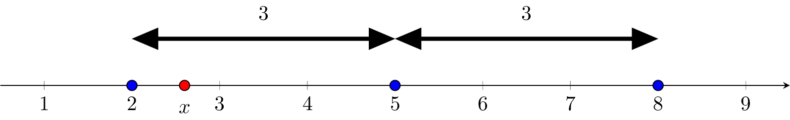

Ensemble de nombres
Les entiers
Définition et représentation
Rem. : Dans le lycée, il y a un ensemble d’humains. Parmi eux, il y a des élèves et parmi ces élèves il y a des secondes.

Def
Parmi les nombres entiers, il existe :
- Entiers naturels : $\N$
- Entiers (sans partie décimale) positifs : $1$ ; $4$ ; $999\ldots$
- Entiers relatifs : $\Z$
- Entiers positifs ou négatifs : $-6$ ; $-77$ ; $98$ ; $114$ $\ldots$

Ex. :
- $17$ appartient à $\N$ et à $\Z\qquad\Rightarrow 17\in\N\quad\text{et}\quad17\in\Z$
- $(-2)$ n’appartient pas à $\N\qquad\Rightarrow (-2)\notin\N$
- $157 \ldots\ldots\ldots\ldots\ldots\ldots\ldots$ à $\N\qquad\Rightarrow 157 \ldots\ldots\ldots \N$
Multiples – diviseurs
Def
Soit $a$ et $b$, deux nombres entiers.
On dit que $a$ est un multiple $b$ s’il existe un entier $k$ tel que :
$$a=k\times b$$
On dit aussi que $b$ est un diviseur de $a$.
Ex. :
- $27=3\times 9$ donc :
- $27$ est multiple de $3$ (et de $9$)
- $9$ est un diviseur de $27$
- $85$ n’est pas un multiple de $10$ car :
- $85=k\times 10\Leftrightarrow k=8.5$ et $k$ pas entier
Prop
Soit $a$ un entier. La somme de deux multiples de $a$, est un multiple de $a$.
Ex. :
$21$ et $33$ sont des multiples de $3$ donc $54=(21+33)$ est un multiple de $3$.
En effet, $54=18\times 3$
Demo
Soit $n_1$ et $n_2$, deux multiples de $a$ alors :
$n_1=k_1\times a\quad$ et $\quad n_2=k_2\times a$
On a donc :
$n_1+n_2=(k_1\times a)+(k_2\times a)=(k_1+k_2)\times a$
Donc : $(n_1+n_2)$ est multiple de $a$
Pair – impair
Def
Un nombre pair est un multiple de $2$.
- Si $~n~$ est pair alors $~n=2k~$ avec $~k\in\Z~$
- Si $~n~$ est impair alors $~n=2k+1~$ avec $~k\in\Z~$
Ex. :
- $~157~$ est impair car $~157=(2\times 78)+1~$
- $~2048~$ est pair car $~2048=(2\times 1024)~$
Prop
Le carré d’un nombre impair est impair
Demo
Soit $n$ un nombre impair. On a donc $\quad n=2k+1$
$$ \begin{aligned} n^2 & =(2k+1)^2=(2k+1)(2k+1) \\ & =4k^2+4k+1 \\ & =2\color{red}(2k^{2}+2k)\color{black}+1 \\ & =2\color{red}K\color{black}+1 \end{aligned} $$
Si $n$ est impair alors $n^2$ est impair.
Nombres premiers
Def
Un entier naturel est dit premier, s’il admet exactement deux diviseurs entiers positifs.
Ex. :
- $25$ admet comme diviseurs $1$, $5$ et $25$ $\rightarrow$ pas premier
- $17$ admet comme diviseurs $1$ et $17\rightarrow\quad$ premier
- $221$ admet comme diviseurs $\ldots\rightarrow\quad\ldots$
Les $100$ premiers nombres premiers

Décomposition en facteurs premiers
Ex. :
- $60=30\times 2\quad=15\times 2\times 2\quad=5\times 3\times 2\times 2$
Méthode pour décomposer $60$ :
$$\begin{array}{r|l}60 & 2\\30 & 2\\15 & 3\\5 & 5 \\1 & ~\\ \end{array}$$
La décomposition de $60$ en facteurs premiers est : $~60=3^1\times 5^1\times 2^2$
Ex. :
- $1300=\ldots$
$$\begin{array}{r|l}1300 & 2\\650 & \ldots\\ \ldots & \ldots\\ \ldots & \ldots\\ \ldots & \ldots\\ \ldots & \ldots\end{array}\qquad\qquad\begin{array}{r|l}\ldots &\ldots\\ \ldots & \ldots\\ \ldots & \ldots\\ \ldots & \ldots\\ \ldots & \ldots\end{array}$$
Les ensembles $\D$, $\Q$ et $\R$
Les décimaux : $\D$
Def
Nombres dont la partie décimale est finie. On peut les écrire sous la forme :
$$\dfrac{a}{10^n}\quad\text{avec}\quad a\in\Z$$
Ex. :
À vous de compléter : $\qquad 0.009=\ldots\ldots\qquad\text{et}\qquad\dfrac{-1234}{10^2}=\ldots\ldots$
Ex. :
-
$1.77=\dfrac{177}{100}=\dfrac{177}{10^2}\iff 1.77 \in \D$
-
$-5.001=\dfrac{-5001}{1000}=\dfrac{-5001}{10^3}\iff -5.001\in\D$
Demo
Démontrons que $\frac{1}{3}$ n’ appartient pas aux décimaux.
Supposons que $\frac{1}{3}$ appartient aux décimaux alors il peut s’écrire sous la forme : $\dfrac{a}{10^n}$
$$ \begin{aligned} \dfrac{1}{3}\in\D\qquad & \Leftrightarrow\qquad\dfrac{1}{3}=\dfrac{a}{10^n} \\ \qquad & \Leftrightarrow\qquad 3\times a=1\times{10^n} \\ \qquad & \Leftrightarrow\qquad 3a=10^n \\ \end{aligned} $$
On a :
- $3a$ est un multiple de $3$ donc la somme des ses chiffres doit être un multiple de $3$.
- $10^n$ est un nombre constitué d’un seul $1$ et de zéros donc la somme des ses chiffres est $1$.
Donc $10^n$ n’est pas un multiple de $3$,$\quad$ donc $10^n\neq 3\times a\quad$ donc $\frac{1}{3}\notin\D$
Les rationnels : $\Q$
Def
Ils peuvent s’écrire sous la forme : $\quad\dfrac{a}{b}\quad$ avec $~a\in\Z~$ et $~b\in\Z^{*}$
Ex. :
-
$\dfrac{2}{7}\in\Q$
-
$\dfrac{1}{3}=0.3333\ldots\in\Q$
-
$\dfrac{50}{7}=7.142~857~142~857~\ldots\in\Q$
Rem. : La partie décimale peut se “répéter” à l’infini.
Les réels : $\R$
Def
Tous les nombres connus en 2nde.
Ex : $-16$ ; $\sqrt{3}$ ; $\pi$ ; $\ldots$
Les ensembles de nombres❤️

Intervalles de $\R$ et valeur absolue
Intervalles de $\R$
Def
L’ensemble $I$ de tous les nombres réels $x$ tels que $~2 \le x \le 4~$ peut se représenter sur une droite graduée :

Cet ensemble est appelé un intervalle et se note :
$$I=\big[2~;~4\big]$$
Ex. :
L’ensemble $J$ des réels $x$ tels que $~ -2\le x\le 7~$ se note : $~J=\big[-2~;~7\big]$
On a : $\quad 4\in[-2~;~7]\quad$ et $\quad -5\notin[-2~;~7]$
Ex. :
| Notation | Inégalité | Représentation |
|---|---|---|
| $\lbrack 0 ; 1\rbrack $ | $0\le x \le 1$ |  |
| $\rbrack -1 ; 3\rbrack $ | $-1\lt x \le 3$ |  |
| $\lbrack -0.5 ; 2.3\lbrack $ | $-0.5\le x \lt 2.3$ |  |
| $\rbrack 2 ; 4\lbrack $ | $2\lt x \lt4$ |  |
| $\rbrack -\infty ; 1.5\rbrack $ | $x \le 1.5$ | |
| $\rbrack -\infty ; -1.7\lbrack $ | $x \lt -1.7$ |  |
| $\rbrack -2 ; +\infty\lbrack $ | $x \gt -2$ |  |
| $\lbrack 2.7 ; +\infty\lbrack $ | $x \ge 2.7$ |  |
Rem : L’ensemble $\R$ est un intervalle qui se note : $\R=\big]-\infty~;~+\infty\big[$
Union et intersection d’intervalles
Def
- L’intersection de deux ensembles $A$ et $B$ est l’ensemble des éléments qui appartiennent à $A$ et à $B$ et se note : $\boxed{A \cap B}$
- L’union de deux ensembles $A$ et $B$ est l’ensemble des éléments qui appartiennent à $A$ ou à $B$ et se note : $\boxed{A \cup B}$
Ex. : $\quad I=\big[0~;~3\big]\qquad\text{et}\qquad J=\big[1~;~5\big]$

Valeur absolue
Def
La distance de deux réels $a$ et $b$ est la distance des points $A$ et $B$ d’abscisses $a$ et $b$ sur la droite numérique.
Ex. :

Rem :
- Si $(a\lt b)$ alors la distance est $\left(b-a\right)$
- Si $(a\gt b)$ alors la distance est $\left(a-b\right)$
On note la distance : $\quad\abs{a-b}\quad$ et on lit $\quad$ valeur absolue de $(a-b)$
Ex. :
La distance de $5$ à $18$ est $\quad\left|5-18\right|=18-5=13$
Def
La valeur absolue d’un réel $x$ est la distance de ce réel à $0$.
Elle est notée : $\qquad\abs{x}$
Ex. : La valeur absolue de $-4$ est la distance de $-4$ à $0$. On a : $\abs{-4}=4$

Ex. :
- $\abs{3}=3$
- $\abs{\sqrt{2}}=\sqrt{2}$
- $\abs{-4}=4$
- $\abs{-0.177}=0.177$
Prop
On a, pour tout $x\in\R$ :
$$\boxed{\left|x\right|=\begin{cases}x\quad&\text{si}~x\ge 0\\-x\quad&\text{si}~x\lt 0\end{cases}}$$
Ex. :
- $\abs{3}=3\quad$ car $~3\gt 0$
- $\abs{-7}=-(-7)=7\quad$ car $~(-7)\lt 0$
Prop
L’intervalle $\big[a-r~;~a+r\big]$ est l’ensemble des $x$ tel que : $\qquad\abs{x-a}\le r$
Ex. :
L’ensemble des nombres $x$ tel que $\lvert x-5\rvert \le 3$ est l’intervalle $I=\big[5-3~;~5+3\big]=\big[2~;~8\big]$
